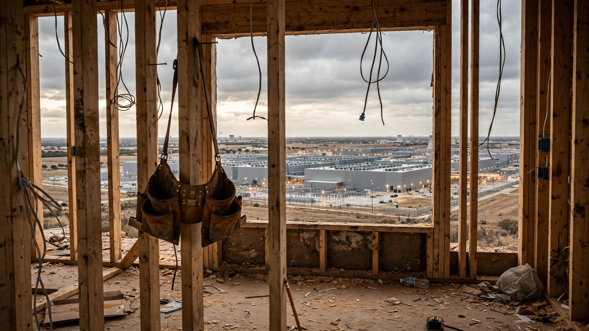

Your Builder's Electrician Quit Last Month. He's Wiring a Data Center for Twice the Pay.
Scotty Wristen trained them himself. Eight years for one guy, five for another. Taught them how to run Romex through studs without nicking insulation, how to wire a 200-amp panel so the inspector wouldn't send them back, how to bend conduit by hand when the bender was on the other truck. He paid them $20 an hour at WE Electric in Abilene, Texas, which is what a residential electrical contractor in a mid-sized Texas city can afford to pay when his customers are building duplexes, not server farms.
Then the Stargate data center broke ground on the outskirts of town. OpenAI, Crusoe, and Oracle, pouring money into a four-million-square-foot AI campus. The data center offered $35 an hour plus overtime plus per diem. Five of Wristen's guys walked.
"I don't blame them," Wristen told the Texas Tribune in April. "It's less strenuous work but more time on the clock, or more money to take home to the family."
He is now hiring teenagers straight out of high school. They show up without tools.
The Numbers That Explain Everything
Between 45 and 70 percent of a data center's entire construction budget goes to electrical subcontractors, according to the International Brotherhood of Electrical Workers. Not electrical plus plumbing plus HVAC. Electrical alone. A single hyperscale campus can employ 4,000 to 5,000 workers at peak construction, up from 750 a few years ago, and the majority of them need to know how to work with high-voltage switchgear, redundant power distribution, and uninterruptible power supply systems that residential electricians have never touched but can learn on the job at wages that make their old paychecks look like an insult.
$86 billion in predicted U.S. data center construction spending in 2026 would require approximately 296,700 workers—85% of the total new construction workers the entire industry needs that year.
The Associated Builders and Contractors estimates the construction industry needs 349,000 net new workers in 2026 and 456,000 in 2027. Employment grew by just 14,000 in all of 2025. Microsoft president Brad Smith has called the electrician shortage "the single biggest challenge for data center expansion in the United States." Not power. Not permits. Not capital. People who can pull wire.
And the competition is not subtle. In northern Virginia, union electricians working data center jobs are pulling $130 an hour before overtime, according to Maria Davidson, CEO of Kojo, a construction procurement platform. In Plano, Texas, top data center electricians are earning $240,000 to $280,000 a year. Contractors are flying training staff to job sites on private jets. Developers are building entire temporary villages—"man camps" with mess halls, dorms, laundry facilities, and RV hookups—to house the electricians they've recruited from three states away.
Gene Lantrip builds duplexes in south Abilene. He is sixty-nine years old and has been on the front lines of Texas's population boom, which has added 2.6 million residents since 2020, all of them needing somewhere to live. His houses now take two months longer to finish than they did before the data centers arrived. "My electrician, he lost two of his lead men and several of his helpers to the data center," Lantrip told the Tribune. "Of course, the guys got to do good for their families."
What Two Extra Months Costs You
Two months is not an abstraction. It is money. On a $400,000 construction loan at 7.5 percent interest, two additional months of carry cost the buyer roughly $5,000 in interest alone. Add the builder's extended overhead—insurance, site supervision, portable toilet rental, the dumpster that keeps billing whether or not anyone is framing—and the real cost of a two-month electrical delay on a single-family home lands somewhere between $7,000 and $12,000 depending on market and contract structure. That cost does not appear on any line item labeled "AI infrastructure." It shows up as a closing surprise or a builder markup that nobody can quite explain.
And two months may be optimistic. Wristen's replacement apprentices need four to five months before they stop making the kind of mistakes that cost time and rework. "It's usually about four or five months of hell where we have little mistakes that cost us time and money," he said. "It's fixable. And once they are trained in it, you don't have those little deals anymore." But trained by whom? The guys who used to do the training left for the data center.
The Pipeline Cannot Save You
Nationally, approximately 20,000 electricians leave the workforce every year. One in three is between 50 and 70 years old. The next decade will see 200,000 retirements from the trade. In the same decade, AI data centers alone will need an estimated 300,000 new electricians, according to industry projections compiled from IBEW and ABC data. That is a net deficit of 500,000 electricians against a training pipeline that produces a journeyman in four to five years and currently is not expanding fast enough to offset retirements, let alone absorb a new demand spike of this magnitude.
Texas has about 71,000 electricians employed. The state is loosening reciprocity agreements to let licensed electricians from Iowa, Alabama, and Arkansas transfer their credentials without retesting. Cameron Dodd, a journeyman electrician and political director of the Austin IBEW chapter, says it is too early to measure the effect. Scott Norman, CEO of the Texas Association of Builders, is less diplomatic: "You can't just snap your finger and say, in six months, we're going to have all these other electricians."
The money is trying. BlackRock launched its Future Builders initiative in June with $100 million over five years to train and place 50,000 skilled trades workers, partnering with Walmart, Home Depot, Carhartt, Google, and Meta. Microsoft and the North America's Building Trades Unions expanded a partnership in April to deliver AI literacy courses and credentials through apprenticeship programs in 34 states, building on 1,500 instructors already trained. Larry Fink, BlackRock's CEO, has estimated that America should plan to spend $10 trillion on data center and energy infrastructure in the coming years.
Ten trillion dollars. And every dollar of it needs an electrician.
The Uncomfortable Irony
Thirteen percent of Associated Builders and Contractors members are currently under contract for data center projects. JLL projects construction employment growth of 0.2 percent in 2026. The Brookings Institution's Mark Muro calls the coming years a period that will "really stress those pipelines." William Self, Mercer's chief workforce strategist, told a Marsh webinar in March that "the single biggest constraint of this entire buildout is the labor needed—and not capital, land, or even energy."
Meanwhile, job postings for robotics technicians are up 107 percent since 2022. HVAC engineers, up 67 percent. Industrial automation, up 51 percent. Construction broadly, up 27 percent. Electricians specifically, up 18 percent. Six-figure HVAC salaries are becoming normal after 10 to 15 percent wage growth over four years. The trades are, by every measure, booming. The money is excellent. The demand is relentless.
And almost none of that demand is for the person who wires your house.
The AI industry talks constantly about how it will transform construction. Robotic bricklayers. Autonomous excavators. AI project management that cuts schedules by 20 percent. All of it is real, all of it is coming, and none of it matters if the electrician who was supposed to rough in your kitchen this week is pulling $130 an hour at a data center in Ashburn, Virginia, living in a company-provided dormitory with a meal stipend.
The technology that promises to solve the construction labor shortage is, right now, making it catastrophically worse. Not in ten years. Not in theory. This quarter, in Abilene, where a sixty-nine-year-old builder waits two extra months for someone to wire his duplexes, and a small contractor hires kids without tools and calls the learning curve "four or five months of hell."
Limitations
The two-month delay figure comes from a single builder in Abilene, Texas, a market directly adjacent to a Stargate campus. The effect may be less pronounced in metros without major data center construction, and more pronounced in northern Virginia, Phoenix, and Dallas, where multiple hyperscale projects compete for the same labor pool simultaneously. The $7,000–$12,000 carry cost estimate uses prevailing construction loan rates and typical builder overhead but is illustrative rather than derived from a controlled study. Wage data for top data center electricians ($240K–$280K) reflects specialized roles in high-demand markets and is not representative of median data center electrical wages nationally. The 300,000-electrician demand projection for data centers over the next decade aggregates multiple industry sources with varying methodologies and should be treated as directional rather than precise.
The strongest counterargument: rising wages in the trades are a feature, not a bug. If data centers are pulling electricians out of residential work at double the pay, the market response is for residential builders to raise wages, which they will eventually do, funded by higher home prices that buyers will eventually absorb. This is how labor markets are supposed to work. The shortage is temporary and self-correcting.
Maybe. But "temporary" in a trade that takes four to five years to produce a journeyman electrician means a decade of pain for anyone trying to build or buy a home. And "self-correcting" means your home costs more, takes longer, and was wired by someone who started the job without owning a set of tools.